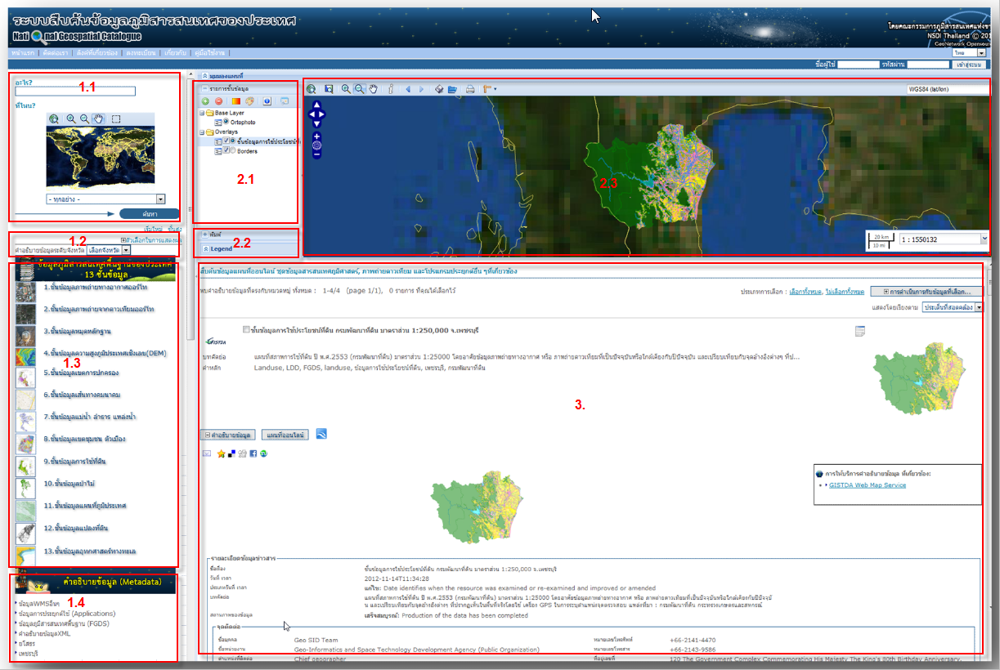
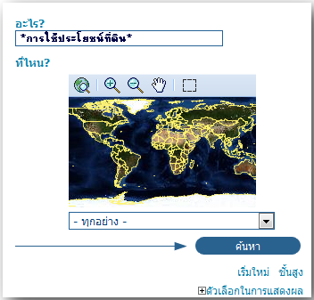
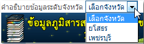

ระบบสืบค้นข้อมูลภูมิสารสนเทศของประเทศ
ระบบสืบค้นข้อมูลภูมิสารสนเทศของประเทศ (Thailand Spatial Data Infrastructure: ThaiSDI) พัฒนามาจาก GeoNetwork Opensource เพื่อพัฒนาระบบการบริการข้อมูลภูมิสารสนเทศทางระบบเครือข่ายอินเทอร์เน็ต (Geo-spatial data clearinghouse) ในรูปแบบของ Catalogue Services for the Web (CSW) และ Web Map Services (WMS) ให้เป็นศูนย์กลางการให้บริการข้อมูลภูมิสารสนเทศพื้นฐานของประเทศ (Fundamental Geographic Data Set: FGDS) ตามมาตรฐาน ISO/TS 19139 ซึ่งถูกออกแบบมาเพื่อจัดเก็บคำอธิบายข้อมูล (Metadata) ตามมาตรฐาน ISO 19115 ที่ี่ใช้คุณสมบัติทางด้านเทคนิคของภาษา XML ในการจัดเก็บข้อมูลเชิงบรรยาย การตรวจสอบความถูกต้อง และการใช้งานร่วมกัน (interoperability) ของคำอธิบายข้อมูลภูมิสารสนเทศ รวมทั้งยังช่วยให้มาตรฐาน ISO 19115 ง่ายต่อการจัดการบำรุงรักษา และทำให้ข้อมูลที่ได้มีคุณภาพ ได้มาตรฐาน เกิดความสะดวกรวดเร็วในการนำไปใช้พัฒนาประเทศต่อไป
โดยระบบ ThaiSDI ได้เปิดตัวอย่างเป็นทางการเมื่อวันที่ 9 กุมภาพันธ์ พ.ศ.2555 ผ่านทางเว็บไซต์ http://thaisdi.gistda.or.th ซึ่งหน้าหลักของระบบสืบค้นและแลกเปลี่ยนข้อมูลภูมิสารสนเทศของประเทศ (ThaiSDI) ประกอบด้วย 3 ส่วนหลักดังนี้
- การสืบค้น คำอธิบายข้อมูล (Metadata)
- ผลการสืบค้น คำอธิบายข้อมูล (Metadata)
- การแสดง คำอธิบายข้อมูล (Metadata)

การสืบค้นคำอธิบายข้อมูล
- การสืบค้น คำอธิบายข้อมูล (Metadata) เพื่อให้ผู้ใช้ค้นหาข้อมูล Metadata แบ่งเป็น 3 ส่วน คือ
- การสืบค้นทั่วไป/การสืบค้นขั้นสูง ซึ่งสามารถค้นหาได้จากชื่อหน่วยงาน ชื่อชั้นข้อมูล หรือคำสำคัญที่ต้องการค้นหา
หมายเหตุ: ในการสืบค้นควรใส่เครื่องหมานดอกจัน(*) หน้าและหลังคำที่ต้องการค้นหา เพื่อสะดวกและรวดเร็วในการสืบค้น เช่น *การใช้ประโยชน์ที่ดิน*

- การสืบค้นจากคำอธิบายข้อมูลระดับจังหวัด (ปัจจุบันแสดงเพียง 2 จังหวัดนำร่อง) 
- การสืบค้นจากคำอธิบายข้อมูลระดับจังหวัด (ปัจจุบันแสดงเพียง 2 จังหวัดนำร่อง)
ผลการสืบค้นคำอธิบายข้อมูล
ผลการสืบค้นคำอธิบายข้อมูล ...
การแสดงค้นคำอธิบายข้อมูล
การแสดงค้นคำอธิบายข้อมูล ...